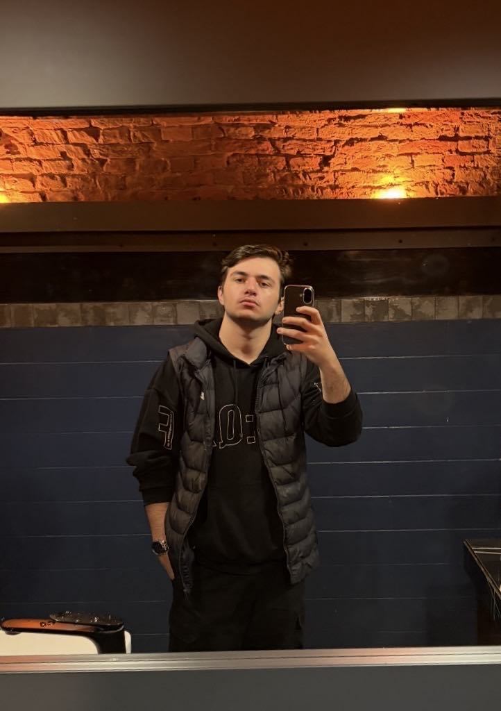

ეს არის ჩემი პირადი ვებ გვერდი, სადაც შეგიძლიათ გაიგოთ მეტი ჩემს შესახებ. ვარ ადამიანი, რომელსაც აინტერესებს ახალი ტექნოლოგიები, კომპიუტერები და თანამედროვე სფეროების განვითარება. ყოველთვის ვცდილობ ვისწავლო ახალი რაღაცები და გავიუმჯობესო ჩემი ცოდნა. ამჟამად ვსწავლობ ბიზნეს ადმინისტრირებაზე და ძალიან მომწონს ეს სფერო. ეს მიმართულება მაძლევს შესაძლებლობას უკეთ გავიგო როგორ მუშაობს ბიზნესი, როგორ იმართება ორგანიზაციები და როგორ მიიღება მნიშვნელოვანი გადაწყვეტილებები რეალურ სამყაროში. განსაკუთრებით მაინტერესებს ეკონომიკური პროცესები და მენეჯმენტი, რადგან ვფიქრობ, ეს ცოდნა მომავალში ძალიან გამომადგება. ჩემი ინტერესების ერთ-ერთი მიმართულებაა პროგრამირება და ვებ გვერდების შექმნა. HTML-ის სწავლა ჩემთვის საინტერესო გამოცდილებაა, რადგან მისი დახმარებით შესაძლებელია იდეების რეალურ ვებ გვერდად გადაქცევა. თავისუფალ დროს ძალიან მიყვარს სპორტი და აქტიური ცხოვრება. განსაკუთრებით მაინტერესებს კალათბურთის და მაგიდის ჩოგბურთის თამაში — ეს არის ის ორი სპორტი, რომელიც მაძლევს ენერგიას, მეხმარება საკუთარი თავის განვითარებაში და ძალიან მსიამოვნებს როგორც თამაშის, ისე ყურების პროცესიც. ასევე ძალიან მიყვარს მანქანის მართვა. ეს ჩემთვის არის არა მხოლოდ გადაადგილების საშუალება, არამედ პასუხისმგებლობა და თავისუფლების შეგრძნება. მართვა მაძლევს შესაძლებლობას ვიყო კონცენტრირებული და ყურადღებიანი სხვადასხვა სიტუაციაში. საერთოდ მიყვარს ახალი გამოცდილებების მიღება და ისეთი აქტივობები, რომლებიც მაძლევს განვითარებისა და თვითგაუმჯობესების საშუალებას.
